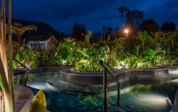

Termales el Otoño
ir a lugar >
1 mes atrás
Excelente, divino todo, sus instalaciones, la atención, la amabilidad del personal, la comida súper deliciosa ame que el desayuno sea bufet porque uno puede escoger a su gusto, el postre de café divinooo, las vista maravillosa, está súper bien cuidado el hotel m, las termales una experiencia inigualable e inolvidable uno no quiere venirse cuando está allí quiere que las horas se detengan.